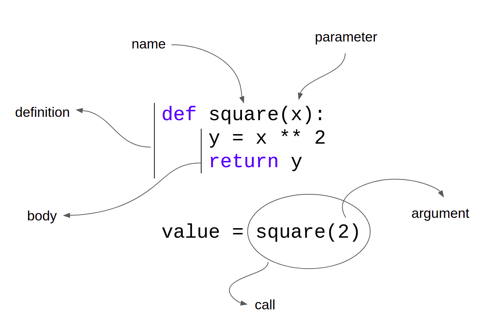

Home Lesson-4.2
Lesson-4.1
Functions
Introduction
In mathematics, a function is an object that accepts one or more inputs and produces one or more outputs. For example, , is a function that accepts a number and returns the square of that number. Functions in Python play a similar role, but are much more richer than their mathematical counterparts. Let us quickly convert the mathematical function, , into a Python function:
xxxxxxxxxx31def f(x):2 y = x ** 23 return yThe code given above is called the definition of function f. def is the keyword used to define functions. f is the name of the function. x is a parameter of the function. Lines 2 and 3 make up the body of the function and are indented. The body of a function is a collection of statements that describe what the function does. At line-3, the value stored in variable y is returned. return is the keyword used for this purpose.
If we run the above code, we will not get any output. Functions are not executed unless they are called. The following code demonstrates what a function call looks like:
xxxxxxxxxx51def square(x):2 y = x ** 23 return y45print(square(2))The output is:
xxxxxxxxxx114
square(2) is a function call. We use the name of the function, square, and pass the number 2 as an argument to it. The x in the function definition is called the parameter. The value that is passed to the function in the call is called the argument. This is a convention that we will follow throughout this lesson.
A visual representation of the terms we have defined so far is given below:

A mental model to understand functions:
- Parameters can be thought of as the function's inputs.
- The body of the function can be pictured as the sequence of steps that transform the input into the output.
- The return statement can be thought of as a means of communicating the output to the rest of the code.
Examples
We will look at a wide variety of function definitions. The focus will be on the syntactical aspects of function definitions.
- Functions could have multiple parameters:
xxxxxxxxxx41# This function computes the area of a rectangle.2# Length and breadth are the parameters3def area(l, b):4 return l * b- Functions could have no parameters:
xxxxxxxxxx21def foo():2 return "I don't like arguments visiting me!"- Functions could have no return value:
xxxxxxxxxx41def foo():2 print("I don't like talking to the outside world!")3 4foo()When the code given above is executed, we get the following output:
xxxxxxxxxx11I don't like talking to the outside world!
Note that we didn't have to type print(foo()). We just had to call the function - foo() - since it already has the print statement inside it. But what happens if we type print(foo())? We get the following output:
xxxxxxxxxx21I don't like talking to the outside world!2None
If no explicit return statement is present in a function, None is the default value returned by the function. When the interpreter comes across the print(foo()) statement, first the function foo() is evaluated. This results in the first line of the output. Since foo() has no explicit return statement, it returns None by default. That is why the second line in the output is None.
- A minimal Python function looks like the one given below:
xxxxxxxxxx21def foo():2 passpass is a keyword in Python. When the interpreter comes across a pass statement, it doesn't perform any computation and moves on to the next line. The reason this is minimal is because it has only those features that are absolutely essential for a function definition to be syntactically valid: function name and at least one statement in the body.
Such functions might seem useless at first sight, but they do have their place. While writing a complex piece of code, a coder may realize that she needs to define a function to perform a specific task. But she may not know the exact details of the implementation or it may not be an urgent requirement. In such a scenario, she will add a minimal function like the one given above in her code and name it appropriately. Implementing this function will become a task on her to-do list and will be taken up as and when the need arises.
- Functions could have multiple return statements, but the moment the first return is executed, control exits from the function:
xxxxxxxxxx31def foo():2 return 13 return 2foo() will always return 1. Line-3 is redundant. An example of a function having multiple returns that are not redundant:
xxxxxxxxxx81def evenOrOdd(n):2 if n % 2 == 0:3 return 'even'4 else:5 return 'odd'67print(evenOrOdd(10))8print(evenOrOdd(11))The output is:
xxxxxxxxxx21even2odd
When evenOrOdd is called with an even number as argument, the return statement in line-3 is executed. When the same function is called with an odd number as argument, the return statement in line-5 is executed.
- Functions could return multiple values:
xxxxxxxxxx91# Accept only positive floating point numbers2def bound(x):3 lower = int(x)4 upper = lower + 15 return lower, upper67y = 7.38l, u = bound(y)9print(f'{l} < {y} < {u}')The exact mechanism of what happens here will become clear when we come to the lesson on tuples. In line-8, the first value returned by bound is stored in l and the second value returned by bound is stored in u.
- Functions have to be defined before they can be called. The function call cannot come before the definition. For example:
xxxxxxxxxx61##### Alarm! Wrong code snippet! #####2print(f(5))34def f(x):5 return x ** 26##### Alarm! Wrong code snippet! #####When the above code is executed, it throws a NameError. Why does this happen? The Python interpreter executes the code from top to bottom. At line-2, f is a name that the interpreter has never seen before and therefore it throws a NameError.
- Function calls could be used in expressions:
xxxxxxxxxx61def square(a):2 return a ** 234x, y, z = int(input()), int(input()), int(input())5if square(x) + square(y) == square(z):6 print('x, y and z form the sides of a right triangle with z as the hypotenuse')- Function calls cannot be assigned values:
xxxxxxxxxx61##### Alarm! Wrong code snippet! #####2def foo():3 return True45foo() = 16##### Alarm! Wrong code snippet! #####The above code throws a SyntaxError.
- Functions can be called from within other functions:
xxxxxxxxxx121### snippet-12def foo():3 print('I am inside foo')4 5def bar():6 print('I am inside bar')7 print('I am going to call foo')8 foo()9 10print('I am outside both foo and bar')11bar()12print('I am outside both foo and bar')What happens if we swap the locations of the definitions of foo and bar? Since bar calls foo inside it, shouldn't the definition of foo come before bar?
xxxxxxxxxx121### snippet-22def bar():3 print('I am inside bar')4 print('I am going to call foo')5 foo()67def foo():8 print('I am inside foo')9 10print('I am outside both foo and bar')11bar()12print('I am outside both foo and bar')snippet-2 produces the same output as snippet-1. More importantly, snippet-2 doesn't throw any error. When the interpreter moves from the top to bottom, it doesn't execute either bar or foo. All that it does is make a note of these function names. By the time it reaches line-11, it knows that there are two functions, bar and foo, that have already been defined. When bar is called at line-11, control enters the body of bar. At line-5, foo is called. Since the interpreter has already made a note of foo's existence, it will go ahead and execute the body of foo.
Docstrings
Consider the following function:
xxxxxxxxxx31def square(x):2 """Return the square of x."""3 return x ** 2The string immediately below the function definition is called a docstring. From the Python docs:
A docstring is a string literal that occurs as the first statement in a module, function, class, or method definition. Such a docstring becomes the
__doc__special attribute of that object.
Ignore unfamiliar terms such as "module" and "class". For now, it is sufficient to focus on functions. Adding the docstring to functions is a good practice. It may not be needed for simple and obvious functions like the one defined above. As the complexity of the functions increase, docstrings can be a life safer for other programmers reading your code.
The docstring associated with a given function can be accessed using the __doc__ attribute:
xxxxxxxxxx11print(square.__doc__)This gives 'Return the square of x.' as output.
Activity Questions
- Write a function called
maxthat accepts two integers as input and returns the maximum among them. - Write a function called
greetthat accepts a person's name and gender as input, and prints a greeting of the form'Hello! Mr. <name>if the person is a male andHello! Ms. <name>if the person is a female. - What is the following function doing? Try to guess its utility by looking at the function definition.
xxxxxxxxxx41def is_cool(temp):2 if temp < 20:3 return True4 return False- Predict the output of the following code. Then head to the interpreter and verify if your answer is correct.
xxxxxxxxxx41def f(x):2 return x * 234print(f(f(f(f(2)))))